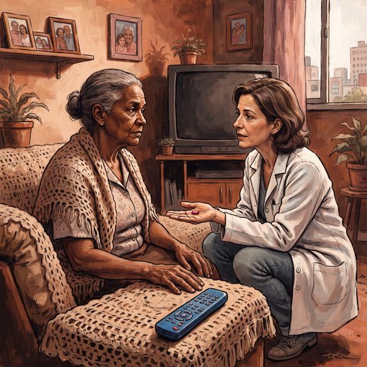

Consulta rápida à beira do leito
Condutas, doses e interações.
Referências da aula · 15
- Perguntar ao paciente como prefere ser chamado — e registrar no prontuário. Retoma a Aula 12 (iatrogenia da comunicação).
- FONTES DESTE SLIDE: Williams KN et al. Am J Alzheimers Dis Other Demen 2009;24:11-20. Friedland C et al. Front Med 2026;13:1893792 (88,9% preferem fala neutra). Lillekroken D et al. J Adv Nurs 2026.
- Hailu GN, Fernandes MIDCD, Vitor AF, Dantas DNA, de Oliveira JSA. Patient-centered communication in home-based dementia caregivers: a concept analysis. Int J Nurs Stud Adv. 2026;11:100594. doi:10.1016/j.ijnsa.2026.100594.DOI
- Grindell C, Hall J, Connolly L, Hawley J, O'Cathain A. Clear Conversations: a mixed methods evaluation of a verbal health literacy initiative for health service providers. BMC Health Serv Res. 2026;26(1). PMID 42106768. doi:10.1186/s12913-026-14684-y. — teach-back, chunk and check, linguagem simples e perguntas abertas.PubMedDOI
- Lillekroken D, Röthig A, Bjørnnes AK. Elderspeak in healthcare settings: how care, control and personhood intersect in care communication — a qualitative meta-synthesis. J Adv Nurs. 2026. PMID 42383511. doi:10.1111/jan.70664. — nasce de intenção de cuidado, mas erode a autonomia e a pessoalidade.PubMedDOI
- Friedland C, Schönenberg A, Lintl M, Prell T. Elderspeak from the perspective of hospitalised geriatric patients: insights from a cross-sectional study using a mixed-methods design. Front Med (Lausanne). 2026;13:1893792. PMID 42591152. doi:10.3389/fmed.2026.1893792. — 88,9% preferem a fala neutra; elderspeak é percebido como menos profissional e menos respeitoso.PubMedDOI
- Eggenberger E, Heimerl K, Bennett MI. Communication skills training in dementia care: a systematic review of effectiveness, training content, and didactic methods in different care settings. Int Psychogeriatr. 2013;25(3):345-58.
- Small JA, Gutman G, Makela S, Hillhouse B. Effectiveness of communication strategies used by caregivers of persons with Alzheimer’s disease during activities of daily living. J Speech Lang Hear Res. 2003;46(2):353-67.
- Williams KN, Herman R, Gajewski B, Wilson K. Elderspeak communication: impact on dementia care. Am J Alzheimers Dis Other Demen. 2009;24(1):11-20.
- Feil N, de Klerk-Rubin V. The Validation Breakthrough: Simple Techniques for Communicating with People with Alzheimer’s and Other Dementias. 3rd ed. Baltimore: Health Professions Press; 2012.
- Neal M, Barton Wright P. Validation therapy for dementia. Cochrane Database Syst Rev. 2003;(3):CD001394.
- Kales HC, Gitlin LN, Lyketsos CG. Management of neuropsychiatric symptoms of dementia in clinical settings: recommendations from a multidisciplinary expert panel. J Am Geriatr Soc. 2014;62(4):762-9.
- 2023 American Geriatrics Society Beers Criteria® Update Expert Panel. American Geriatrics Society 2023 updated AGS Beers Criteria® for potentially inappropriate medication use in older adults. J Am Geriatr Soc. 2023;71(7):2052-81.
- Livingston G, Huntley J, Liu KY, et al. Dementia prevention, intervention, and care: 2024 report of the Lancet standing Commission. Lancet. 2024;404(10452):572-628.
- Freitas EV, Py L, organizadores. Tratado de Geriatria e Gerontologia. 5ª ed. Rio de Janeiro: Guanabara Koogan; 2022.
Documentos oficiais
Leis e publicações do Ministério da Saúde sobre o cuidado da pessoa idosa, de acesso livre.
Abrir os documentos